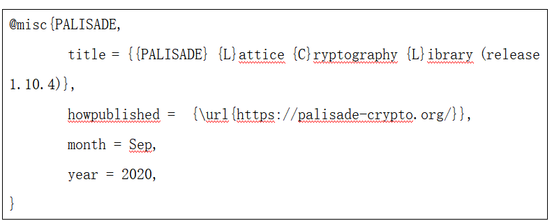

欢迎访问PALISADE 的中文Wiki（维基百科）
本页面由陈智罡博士负责翻译更新维护，英文页面请访问这里。
Palisade是一个开源项目。 我们很荣幸的宣布，我们正在接受NumFOCUS.org（专注于开源数据科学软件的非营利基金会）资助。 请参阅我们的PALISADE管理文档，以获取各个PALISADE团队及 其职责的列表。 另请参阅我们制定的行为准则，以了解我们的贡献者和维护者的责任。
该Wiki是服务用户使用PALISADE库的信息汇总。我们欢迎您通过社区提供其他相关材料。如果有任何建议，建议的文档或者类似的建议相关内容，请发送至如下地址：
或者
·PALISADE项目负责人:
o Yuriy Polyakov： ypolyakov@dualitytech.com
o Dave Cousins： dcousins@njit.edu, dcousins@dualitytech.com
PALISADE介绍
PALISADE是一个通用的格密码库，目前包含以下格密码算法的有效实现：
·全同态加密（FHE），包含如下方案
·用于整数计算的Brakerski / Fan-Vercauteren（BFV）方案
·用于整数计算的Brakerski-Gentry-Vaikuntanathan（BGV）方案
·用于实数计算的Cheon-Kim-Kim-Song（CKKS）方案
·用于布尔电路计算的Ducas-Micciancio（FHEW）和Chillotti-Gama-Georgieva-Izabachene（TFHE）方案
·有限整数计算的Stehle-Steinfeld方案
·多方全同态加密，包含如下方案
·BGV，BFV和CKKS方案的门限FHE
·BGV，BFV和CKKS方案的代理重加密
·数字签名
·基于身份的加密
·密文策略基于属性的加密
PALISADE是支持Linux，Windows和macOS的跨平台C ++ 11库。支持的编译器是g ++ v6.1或更高版本以及clang ++ v6.0或更高版本。
该库还包括单元测试和示例应用程序演示。
PALISADE在BSD-2条款的许可下使用。
该库基于模块化体系结构，包含如下各层：
·数学运算层：支持一些基础计算，例如模算术，数论变换和整数采样。该层支持可移植到多种硬件计算框架下。
·格运算层：支持格运算，环代数和格陷门采样。
·加密层：包含各类格密码方案的有效实现。
·编码层：为各种加密方案提供多种明文编码。
PALISADE的重点在于方案的可用性。例如，所有带有密文打包的FHE方案都使用相同的通用API，并使用运行时多态性实现。
PALISADE有效实现了的余数系统（RNS）算法，从而大幅提高BGV，BFV和CKKS等方案的性能。PALISADE库被用作全基因组关联研究（GWAS）解决方案的库，在iDASH’18比赛上获奖。
默认情况下，该库的构建没有外部依赖关系。但是如果需要，可以为用户提供添加GMP / NTL和/或tcmalloc（线程敏感内存分配）第三方库的选项。
PALISADE入门
为了熟悉PALISADE，我们建议您阅读以下Wiki文章：
为了熟悉PALISADE的主要API，我们建议您查看以下示例的代码：
1.用于整数运算（BFV）的全同态加密：
2.用于整数运算（BGV）的全同态加密：
3.用于实数运算（CKKS）的全同态加密：
4.布尔电路的全同态加密（FHEW / TFHE）：
5.门限全同态加密：
更多文档
对PALISADE目录中的文件和README.md文件的说明：
在doc/wiki目录下的Wiki页面
修改和改进PALISADE
我们鼓励您对PALISADE进行修改和改进。请参阅Contributing.md文件，以了解有关遵循我们的主要和次要贡献过程的详细信息，以及有关我们编程风格要求的讨论。Contributing.md。
·如果您计划对PALISADE进行重大修改，请先与我们联系，因为PALISADE正在开发中。这样，您可以确保添加的内容与计划的PALISADE版本保持一致。它还将确保您所做的更改基于开发库的#### 最新版本。
·PALISADE发行版本的所有新增内容均需获得PALISADE治理团队的批准，具体见PALISADE管理文档中的规定。
许可证信息
PALISADE库使用BSD-2条款许可，这使公司和其他组织更容易使用该软件并将其集成到产品中，而不必担心受到许可问题的阻碍。
感谢我们的贡献者
如何引用PALISADE
要在学术论文中引用PALISADE，请使用以下BibTeX条目。如果使用其他（旧）版本，请使用https://gitlab.com/palisade/palisade-development/blob/master/Release_Notes.md 中的日期去 更新发行版本和月份/年份。

经常问的问题
请参阅“ PALISADE常见问题解答”页面，以获取常见问题和解决方案的列表。